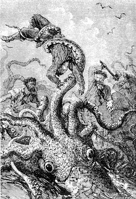

Je regardai à mon tour, et je ne pus réprimer un mouvement de répulsion. Devant mes yeux s’agitait un monstre horrible, digne de figurer dans les légendes tératologiques. C’était un calmar de dimensions colossales, ayant huit mètres de longueur. Il marchait à reculons avec une extrême vélocité dans la direction du Nautilus. Il regardait de ses énormes yeux fixes à teintes glauques.

Ses huit bras, ou plutôt ses huit pieds, implantés sur sa tête, qui ont valu à ces animaux le nom de céphalopodes, avaient un développement double de son corps et se tordaient comme la chevelure des Furies. On voyait distinctement les deux cent cinquante ventouses disposées sur la face interne des tentacules sous forme de capsules semi- sphériques. Parfois ces ventouses s’appliquaient sur la vitre du salon en y faisant le vide. La bouche de ce monstre – un bec de corne fait comme le bec d’un perroquet – s’ouvrait et se refermait verticalement. Sa langue, substance cornée, armée elle-même de plusieurs rangées de dents aiguës, sortait en frémissant de cette véritable cisaille. Quelle fantaisie de la nature ! Un bec d’oiseau à un mollusque ! Son corps, fusiforme et renflé dans sa partie moyenne, formait une masse charnue qui devait peser vingt à vingt-cinq mille kilogrammes. Sa couleur inconstante, changeant avec une extrême rapidité suivant l’irritation de l’animal, passait successivement du gris livide au brun rougeâtre. De quoi s’irritait ce mollusque ? Sans doute de la présence de ce Nautilus, plus formidable que lui, et sur lequel ses bras suceurs ou ses mandibules n’avaient aucune prise. Et cependant, quels monstres que ces poulpes, quelle vitalité le Créateur leur a départie, quelle vigueur dans leurs mouvements, puisqu’ils possèdent trois cœurs !